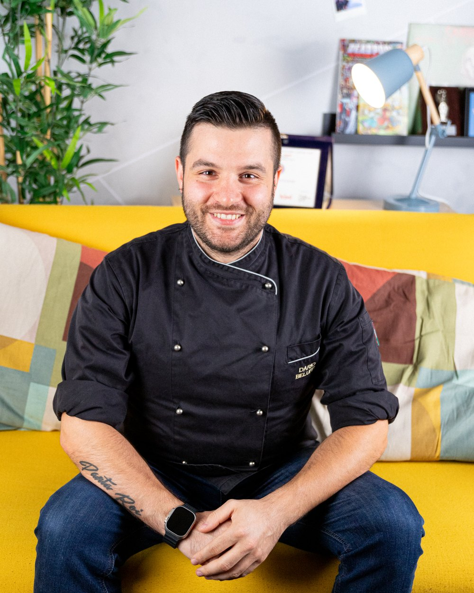

Dario Beluffi
Pasticcere e imprenditore. Dal 2016 lavoro solo sulla pasticceria vegetale.

Ho aperto la mia prima attività a quattordici anni, con mio fratello: una gelateria con caffetteria, che poi è diventata una pasticceria.
Fra il 2008 e il 2011 ho scelto i posti dove lavorare uno per uno, e li ho scelti il più diversi possibile: hotel a cinque stelle e strutture piccole, ristoranti, laboratori industriali, realtà artigianali grandi e piccole. Non era curiosità. Lo scrivevo già allora: volevo costruire un percorso che mi permettesse un giorno di fare il consulente in questo settore. Serviva vedere come si lavora quando sei in due e come si lavora quando ci sono trecento chili in una impastatrice, perché sono due mestieri diversi e un consulente deve saperli entrambi.
Nel 2016 sono passato al vegetale al cento per cento, e da allora ho fatto solo quello. Ho anche cominciato a scriverne: con Taita Press sono usciti tre volumi della collana Progetto Veg — Torte da Forno (2017), Mousse & Tiramisù (2018) e Biscotti & Snack (2020) — con il taglio che uso ancora adesso: formule, processo, e perché una cosa funziona e un’altra no.
Nel 2017 abbiamo fondato Bel.co S.r.l., io e mio fratello Matteo, e l’abbiamo fondata per fare consulenza e formazione: era quello il mestiere a cui puntavo fin da quando sceglievo uno per uno i posti dove andare a lavorare.
Il marchio IN-VECE dell’uovo è nato nel 2019, da problemi che vedevo lavorando dentro le aziende e che con i prodotti in commercio non si risolvevano: sostituti vegetali dell’uovo per i professionisti, aquafaba in polvere e alghe proteiche. Li sviluppo, li importo e li vendo a laboratori e industria, in Italia e in Europa. È la ragione per cui quando parlo di una materia prima parlo di costi, di resa e di lotti, non di ispirazione. Nel suo glossario della cucina vegana, Gambero Rosso indica IN-VECE come «l’unico marchio» in Italia a vendere alghe proteiche e grasse.
Il sistema di conversione su cui si reggono quei prodotti l’ho sviluppato io. Converte uovo intero, tuorlo e albume in acqua, parte grassa e proteina vegetale, con rapporti diversi per otto tipi di preparazione: un uovo in un impasto lievitato non fa lo stesso lavoro che fa in una meringa, e un rapporto unico per tutto sarebbe sbagliato quasi ovunque. È pubblicato e si usa gratis — il convertitore uova — insieme alla tabella completa e al procedimento per ogni preparazione.
Ho avuto con altri soci Essenza Sushi, un format di ristorazione vegetale: ne ho industrializzato il menù, e ha chiuso il 2 agosto 2026. Averlo fatto serve quando un’azienda mi chiede di rendere ripetibile una ricetta su più punti vendita: l’ho dovuto fare per me, con i miei soldi.
Il 30 marzo 2026, con i miei soci, ho aperto Sementis Bakery a Pietrasanta, in provincia di Lucca: una bakery interamente vegan di cui sono pastry chef. Il laboratorio ha due aree produttive separate con attrezzature indipendenti: una vegan con glutine, una vegan senza glutine. L’ho progettato io, scegliendo le attrezzature. Ed è anche il posto dove provo le cose prima di portarle a un’azienda.
Una scelta di quel laboratorio la dico perché è una posizione, non un vanto: da noi il senza glutine costa come il con glutine.
Cosa ho fatto per le aziende
- Cinque semilavorati vegetali, a base di alga proteica, che ho portato a catalogo di un produttore italiano di semilavorati per pasticceria e gelateria, con codice articolo, scheda allergeni e valori nutrizionali.
- Un audit del processo di sviluppo prodotto per la stessa azienda: dieci criticità rilevate, ognuna con la soluzione proposta.
- Un contratto continuativo come riferimento tecnico sul vegetale per un produttore di semilavorati.
- Un videocorso sul vegetale per la scuola di formazione interna di un gruppo industriale, girato nel loro stabilimento.
- Formazione su vegetale, pasticceria e caffetteria per società di formazione, piattaforme di corsi professionali e scuole di pasticceria.
I nomi delle aziende non li scrivo: quello che ho sviluppato per loro è loro, e il lavoro si giudica da cosa è stato consegnato. In una riunione rispondo a qualunque domanda tecnica su quei progetti.
Pubblicazioni e riconoscimenti
- Tre volumi della collana Progetto Veg, Taita Press: Torte da Forno (2017), Mousse & Tiramisù (2018), Biscotti & Snack (2020).
- Power List 2026 di Dolcesalato, sezione Bakery, 1° agosto 2026.